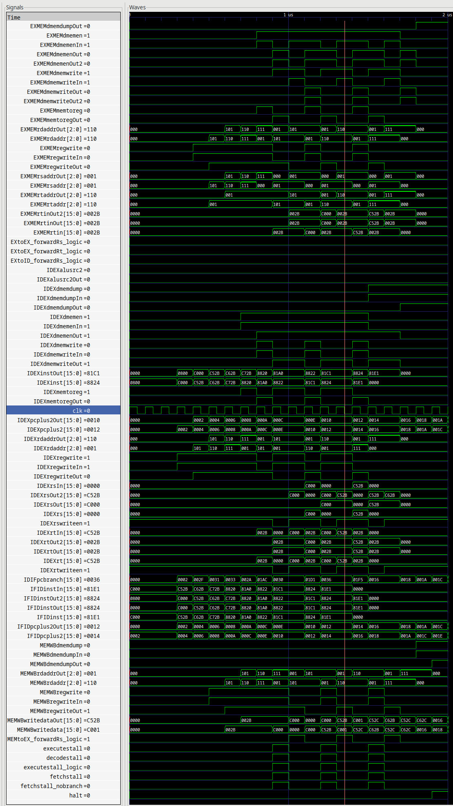

1 perf-test-dep-ldst.asm
lbi r0, 0 lbi r5, 43 lbi r6, 43 lbi r7, 43 ld r1, r0, 0 st r5, r1, 0 ld r1, r0, 2 st r6, r1, 1 ld r1, r0, 4 st r7, r1, 1 halt
2 Behavior
| Cycle | Instruction Retired | Reason |
|---|---|---|
| 1 | nop |
First instruction at Fetch Stage |
| 2 | nop |
First instruction at decode stage |
| 3 | nop |
First instruction at execute stage |
| 4 | nop |
First instruction at mem stage |
| 5 | lbi r0, 0 |
First instruction written back |
| 6 | lbi r5, 43 |
|
| 7 | lbi r6, 43 |
|
| 8 | lbi r7, 43 |
|
| 9 | ld r1, r0, 0 |
|
| 10 | nop |
r0 + 0 was calculated, need stall here to fetch memory at addr. |
| 11 | st r5, r1, 0 |
|
| 12 | ld r1, r0, 2 |
r0 + 2 was calculated, need stall here to fetch memory at addr. |
| 13 | nop |
|
| 14 | st r6, r1, 1 |
|
| 15 | ld r1, r0, 4 |
|
| 16 | nop |
r0 + 4 was calculated, need stall here to fetch memory at addr. |
| 17 | st r7, r1, 1 |
|
| 18 | halt |
3 Waveform
